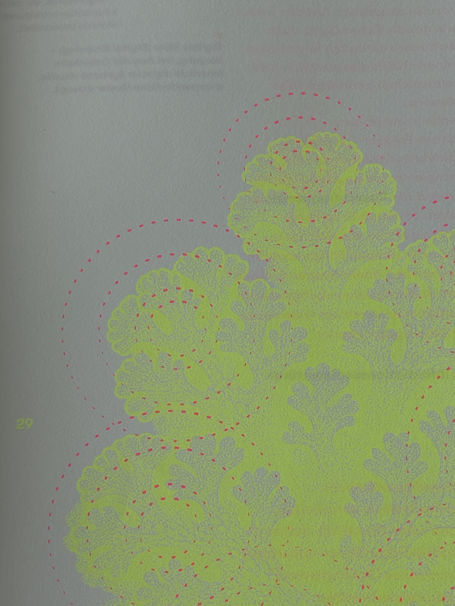
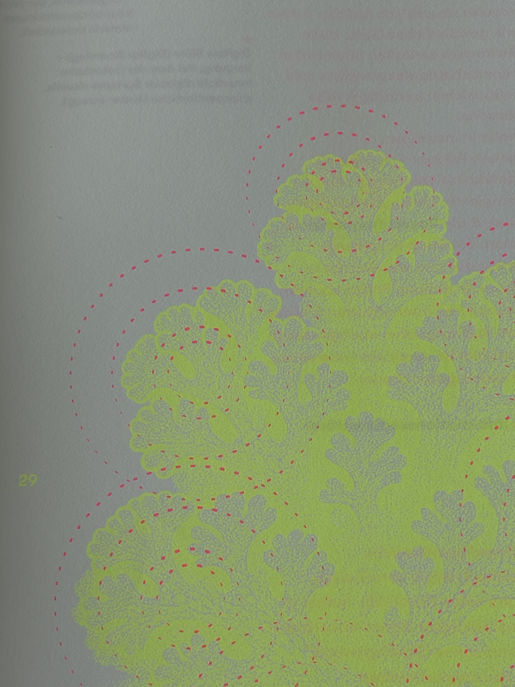
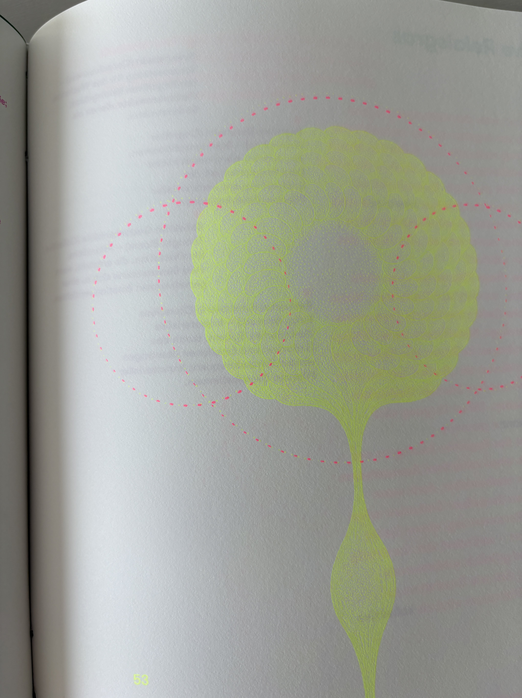
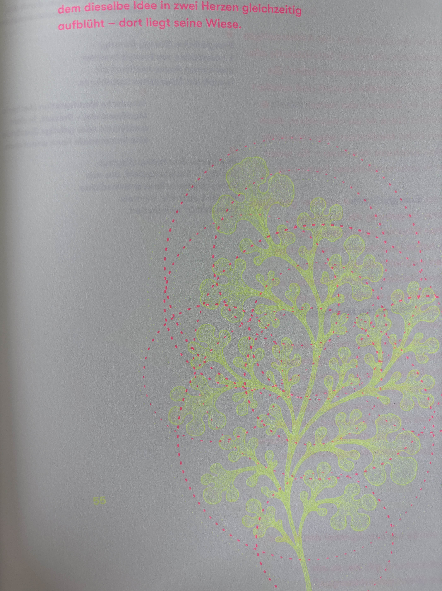
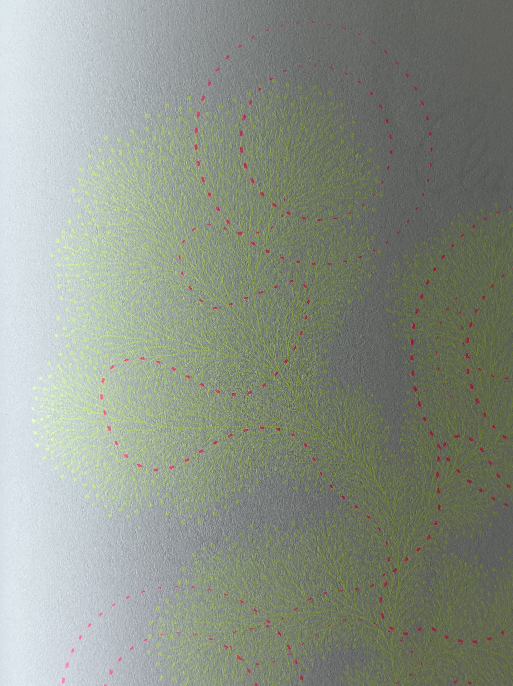
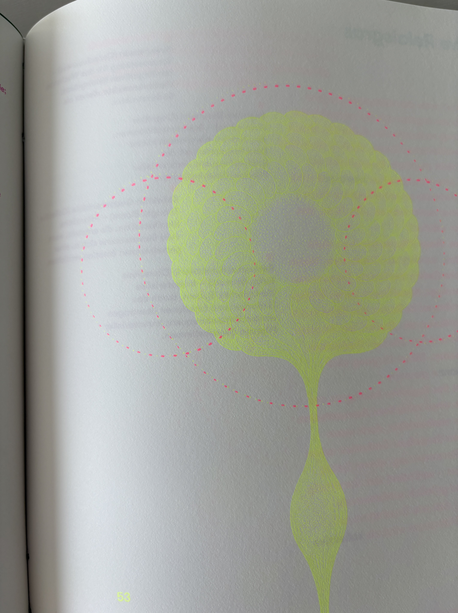
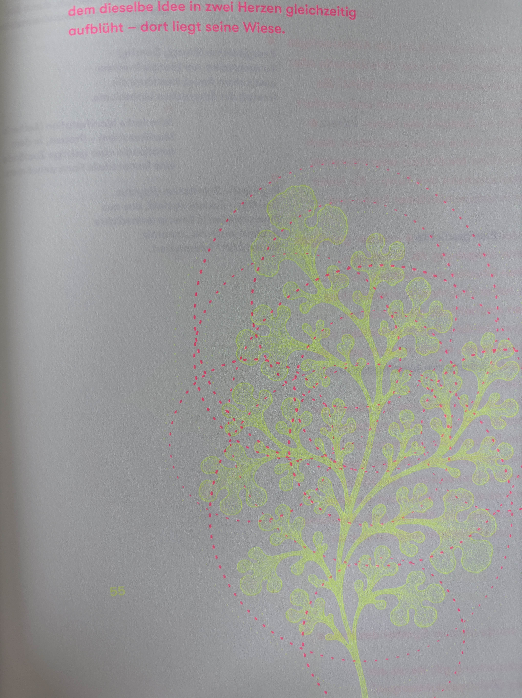
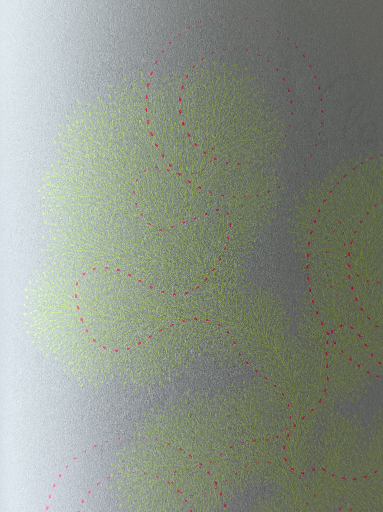

Atlas der Metaphysischen Pflanzen
비물질 식물 도감: 그래픽으로 헛소리하기. 형이상학적 식물 현상을 모은 가상학술지를 디자인했습니다. 이 책은 기억, 부패, 시간, 에너지, 신앙 등 비물질을 양분 삼은 식물들을 글과 그림으로 소개합니다.
한편, 이 책은 만들 때 환경에 주는 영향을 최소화했습니다. 쓰고 남은 여분 종이를 활용하고(따라서 개별 책마다 사용된 종이가 다릅니다) 제책부터 포장에 이르기까지 화학적 접합-제책 본드 등을 일절 사용하지 않았습니다. 동아시아 전통 제책법으로, 실로만 엮어 매듭지었습니다.

 

 




